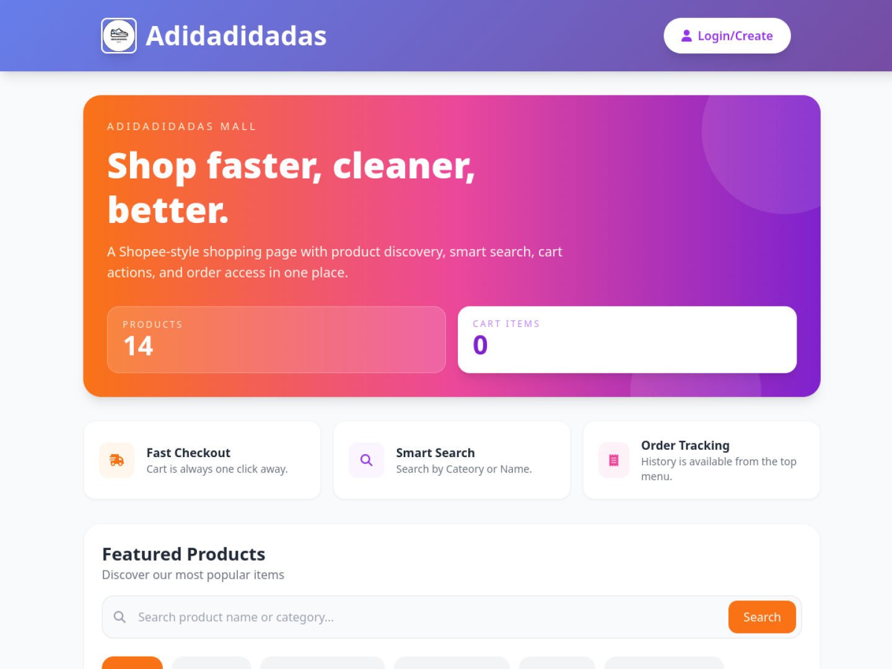

Personal project
E-Commerce Management System
A product storefront and store-management workflow for browsing, carting, and managing orders.
- Public page shows product discovery, categories, search, and cart access.
- Repository includes cart, checkout, order-tracking, and product-management flows.
- README describes separate admin, staff, and customer functionality.